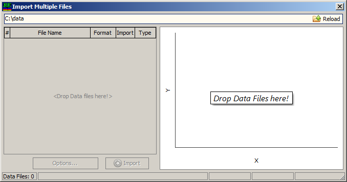
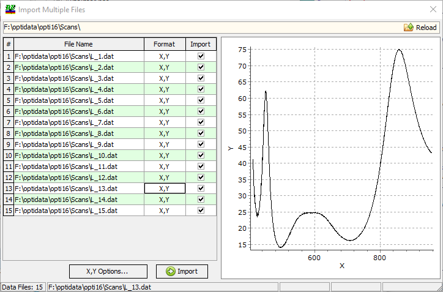

Import Multiple Files
The Import Multiple Files option greatly simplifies the measurement data import process. Using this option, you can import many files in one simple operation. The file format is recognized automatically by OptiChar.

The Import Multiple Files command opens the corresponding window. At the top of the window, the currently opened folder is displayed, which can be changed using the Browse button on the right side. The Reload button initiates the reloading of all files in the current folder. This feature is useful if new files have been added or if some files have been deleted from this folder by another program.
Instead of using the Browse button, it is possible to use a drag-and-drop operation. Simply select the files of interest or a folder containing these files and drop them onto the right part of the window.
Note: You can also use the Measurement database as a drop target for files to be imported! In this case, you even do not need to open the Import Multiple Files dialog yourself.
After selecting a data folder with measurement files, they are scanned by OptiChar, and related data for the selected file is shown in the chart.

You can view extracted spectra. It is possible to select only a part of the files for the import.
The Import button will perform the actual import operations, and all selected files will be saved to the Measurements database.